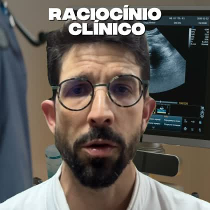
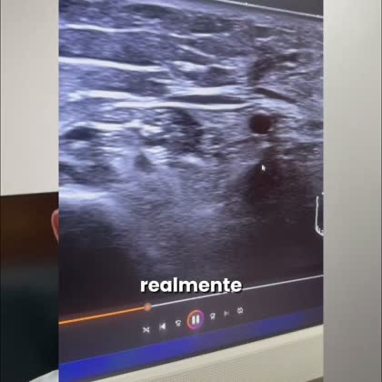

Hoje cada frente depende de 1 ou 2 criativos. Precisamos de mais peças no mesmo molde do que já capta. Abaixo está o que funcionou, o que não repetir e o pedido.
Os 3 vídeos que funcionam:

Toda terça a gente tem encontro marcado… casos, laudo, raciocínio clínico e o que acontece de verdade na prática de quem faz todo dia.Título escrito na tela, aparelho atrás. O melhor de longe.

Esse nervo está espessado ou eu estou medindo errado? É patológico ou variação?Perguntas reais do exame, com a imagem de ultrassom na tela.
É hoje, hein? … hoje às 20h30 a gente tem um encontro ao vivo.Funciona no dia da live, pra quem já conhece o Glauber.
A 006 trouxe 3 de cada 4 inscrições. Se ela cansar, hoje não temos substituta.
Todas as peças em 1:1 e 9:16. Nenhuma arte da Aula Magna tem versão vertical hoje, e por isso ela não aparece no Stories.
Nome do caso escrito na tela logo no início, consultório ou aparelho atrás, e o convite no fim: "toda terça, 20h30, no YouTube". Sugestão de casos: nódulo no tornozelo que era hérnia com nervo, "epicondilite" que era neuropatia, "trombose" que era hanseníase.
3 ou 4 perguntas curtas que o médico se faz diante da imagem, com o ultrassom na tela enquanto ele fala. Dúvidas novas, mesmo ritmo.
Para rodar só às terças. Se tiver o tema da live, citar ("hoje: nervo mediano").
Manter o rosto, a faixa de dia e hora no topo e o "mesmo sem experiência". Variar a foto (de jaleco, com o transdutor na mão, sorrindo), a cor e a frase de promessa.
O que ele vai ensinar, pra quem é ("mesmo sem experiência") e quando ("toda quinta, 20h, online e gratuita").
Ainda não rodamos estes formatos. Entram ao lado das peças acima pra ampliar o banco.
Um trecho em que o Glauber está ensinando de verdade: imagem de ultrassom, caso, explicação. Ele aparece no início ou no fim convidando: "isso é o que a gente faz toda terça, 20h30, no YouTube" (Live) ou "toda quinta, 20h, online e gratuita" (Aula Magna). Mostra como a aula é por dentro. Fazer recortes da Live e da Aula Magna, com legenda queimada.
Aluno real contando o que mudou na prática (vídeo curto ou print de mensagem e comentário), fechando com o convite pra próxima aula. Prioridade para médicos que começaram sem experiência em nervo, porque conversa com a promessa da Aula Magna.
Importante: a Aula Magna acontece toda quinta, e a campanha fica no ar direto. Por isso o material da Aula Magna deve dizer "toda quinta, 20h", sem data do calendário, pra peça não vencer.